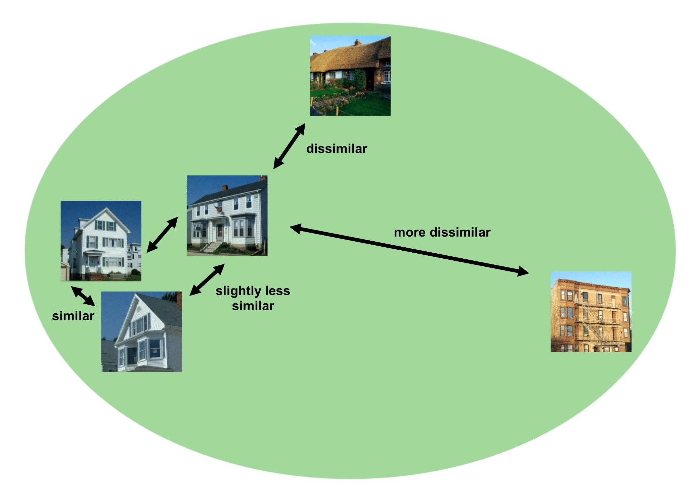
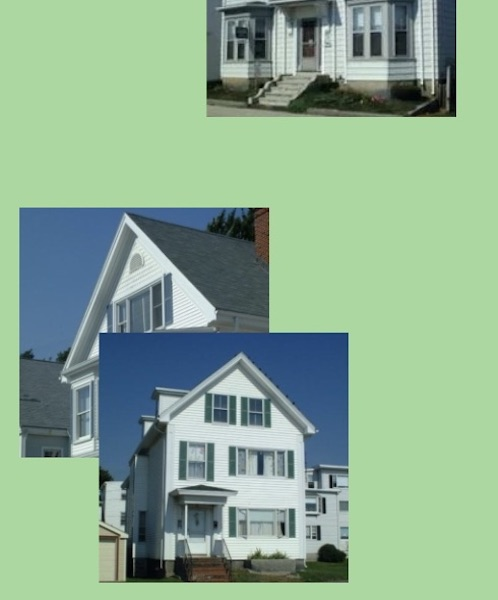
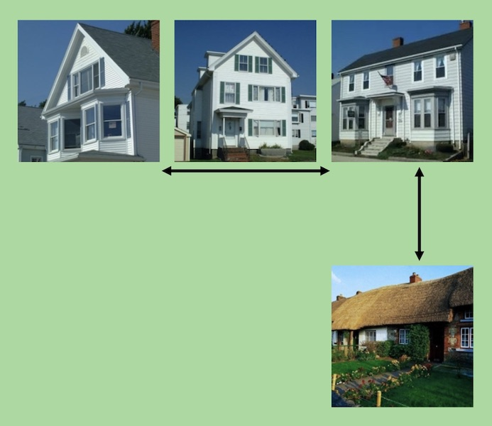

<!DOCTYPE html>
<html>
    <head>
      <script src="jspsych-6.3.1/jspsych.js"></script> 
      <script src="jspsych-6.3.1/plugins/jspsych-preload.js"></script>
      <script src="jspsych-6.3.1/plugins/jspsych-free-sort-custom.js"></script>
      <script src="jspsych-6.3.1/plugins/jspsych-fullscreen.js"></script>
      <script src="jspsych-6.3.1/plugins/jspsych-instructions.js"></script>
      <script src="jspsych-6.3.1/plugins/jspsych-survey-text.js"></script>
       <script src="jspsych-6.3.1/plugins/jspsych-survey-multi-select.js"></script>
       <script src="jspsych-6.3.1/plugins/jspsych-survey-multi-choice.js"></script>
      <link href="jspsych-6.3.1/css/jspsych.css" rel="stylesheet" type="text/css">

      <script src="js/helper.js"></script>
    </head>
    <body>
    </body>
    <script>
        var timeline = []

        var preload = {
          type: 'preload',
          auto_preload: true,
          continue_after_error: true,
          max_load_time: 15000
        };
        timeline.push(preload);

        var enter_fullscreen = {
          type: 'fullscreen',
          fullscreen_mode: true
        };
        timeline.push(enter_fullscreen);

        stims_names = [
            'stims_air', 
            'stims_ani', 
            'stims_boa', 
            'stims_fru', 
            'stims_mus', 
            'stims_pla',
            'stims_sea',
            'stims_spo',
            'stims_sta',
            'stims_veg',
            'stims_veh',
        ]

        // shuffled stims array
        var stims = jsPsych.randomization.repeat(stims_names, 1)

        // instructions
        var instruction = {
            type: 'instructions',
            pages: [
                '<font size="6"><b>WELCOME TO THE EXPERIMENT</b></font>'+"<br>" + "<br>"+
                'You will be shown sets of images on the screen.' +"<br>" + "<br>" + 
                'You should move the images around so that'+"<br>" + 
                'images that are similar to each other are placed closely.'+"<br>" + 
                '<b>The more similar two images are, the closer they should be.</b>'+"<br>" + "<br>"+
                'To move the images, click and drag them with your mouse.'+"<br>" + "<br>"+
                '<i>Click next to see an example.</i>',
                '<font size="6"><b>EXAMPLE</b></font>'+"<br>" + "<br>" + 
                '<center></img></center>'+ "<br>" + 
                'Among these five images, the three images of white houses are similar, and so they were moved close together.' +"<br>" + 
                'Two of these three images in particular are highly similar and are slightly closer together than the third image.' +"<br>" + 
                'The fourth image of a house is more dissimilar from the other three, so it is further from the other house images.'+"<br>" + 
                'The fifth image is very dissimilar from all the other images, so it is the furthest away from the other four images.'+"<br>" + "<br>"+
                '<i>Click next to continue.</i>',
                '<font size="6"><b>HOW TO ORGANIZE IMAGES</b></font>'+"<br>" + "<br>" + 
                '<center><div class="row"><figure style="width:400px"></img><figcaption>Do not stack images</figcaption></figure><figure style="width:400px"></img><figcaption>Do not focus on neatly sorting images</figcaption></figure></div></center>'+ "<br>" + 
                'insert instructions' +"<br>" + 
                'insert instructions'+"<br>" + "<br>"+
                '<i>Click next to begin the experiment.</i>'
            ],
            button_label_previous: "Back",
            show_clickable_nav: true
        };
	 
	    timeline.push(instruction);

        // free sort task
        for (let i = 0, len = stims.length, text = ""; i < len; i++) { 
            var stims_list = [
                stims[i]+'/bas1.jpg',
                stims[i]+'/bas2.jpg',
                stims[i]+'/bas3.jpg',
                stims[i]+'/bas4.jpg',
                stims[i]+'/sub1.jpg',
                stims[i]+'/sub2.jpg',
                stims[i]+'/sub3.jpg',
                stims[i]+'/sub4.jpg',
                stims[i]+'/sub5.jpg',
                stims[i]+'/sup1.jpg',
                stims[i]+'/sup2.jpg',
                stims[i]+'/sup3.jpg',
                stims[i]+'/sup4.jpg',
                stims[i]+'/sup5.jpg',
                stims[i]+'/sup6.jpg'
            ];
            if (stims[i] == 'stims_boa' || stims[i] == 'stims_pla') {
                stims_list.push(
                    stims[i]+'/sup7.jpg',
                    stims[i]+'/sup8.jpg'
                )
            };
            var sort_trial = {
                type: 'free-sort',
                stimuli: stims_list,
                stim_width: 75,
                stim_height: 75,
                scale_factor: 2,
                sort_area_width: 600,
                sort_area_height: 500,
                prompt: "<p style='margin-bottom: -10px;'><b>Click and drag the images below to sort them so that similar items are close together.</b></p>"
            };
            timeline.push(sort_trial);
        };

        // add demographics and debrief questions
        var demographics = create_demographics();
        timeline = timeline.concat(demographics);
        var debrief = create_debrief_questions();
        timeline = timeline.concat(debrief);

        //create random code for final message
        var code = createCode("CatAct");
        
        jsPsych.init({
            timeline: timeline
        })

    </script>
</html>